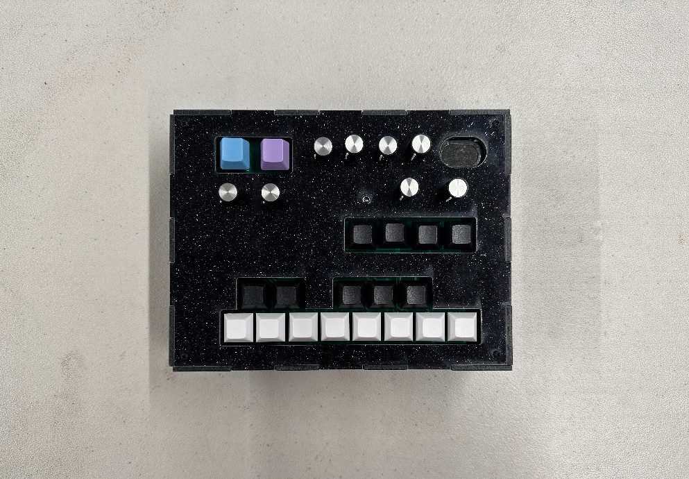
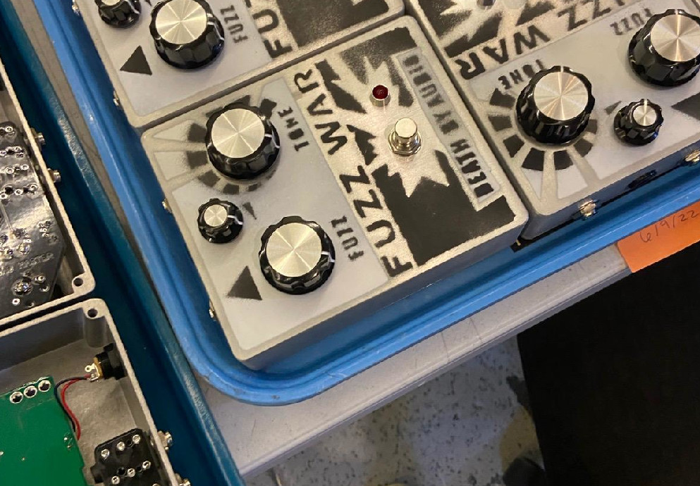

For my Electronic Product Design course at NYU, I built a digital synthesizer. I used a Teensy, Arduino, and the Teensy Audio Library to program everything. It has 13 keys spanning an octave, an envelope, a ring modulator effect, octave up and down buttons, and an arpeggiator effect. It has a built in speaker and an ⅛" out. It can also be used as a midi controller. I designed the printed circuit board in KiCad and the laser-cut acrylic enclosure in Adobe Illustrator.

I also worked in the assembly team at Death By Audio for three years, where I built, soldered, and tested various effects pedals. I also did quality control and assisted my boss in backend operations pertaining to dealers and other business partners.

For my Music Tech senior capstone at NYU, I wanted to explore the world of room acoustics. It was a large learning process that I enjoyed every minute of. I audited the program's graduate-level acoustics course in addition to doing my own research into room acoustics and impulse response measurements. Ultimately, I took impulse response measurements of one of the new music facilities at NYU's Paulson Center using Room EQ Wizard and convolved various measurements with a dry signal, a studio recording of drums, in Python.